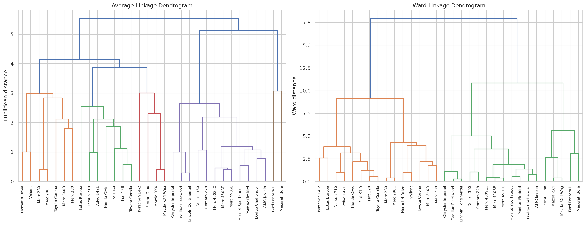
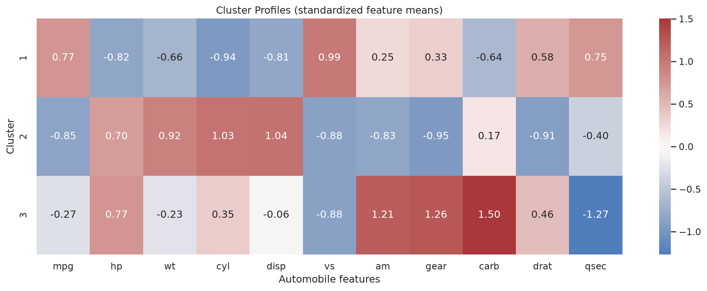
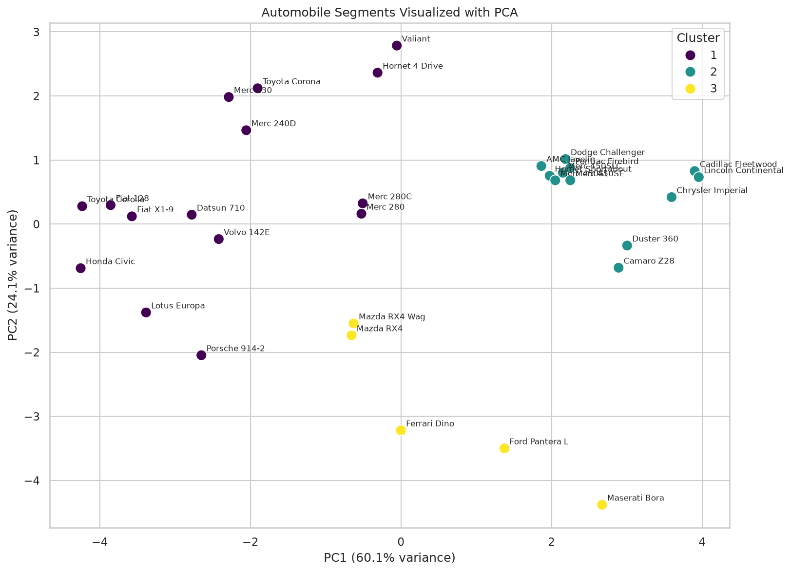

Automobile buying and comparison rely on predefined categories (sedan, SUV, truck) that don’t always reflect how vehicles actually relate. Manufacturers, dealers, and analysts need a data-driven way to segment cars by their real technical and performance characteristics — fuel efficiency, power, weight, engine size — without imposing arbitrary labels.
The project uses the classic mtcars automobile dataset — 32 automobile models with 11 numeric features plus a vehicle model identifier: miles per gallon (mpg), cylinders, displacement, horsepower, rear axle ratio, weight, quarter-mile time, engine type, transmission type, number of gears, and carburetors. The dataset is a commonly used historical teaching dataset, not a current market sample.
Applied agglomerative hierarchical clustering with Ward and average linkage using Euclidean distance. All numerical features were standardized with Scikit-learn’s StandardScaler before clustering. Used SciPy for hierarchical clustering and dendrograms, Scikit-learn for silhouette evaluation and PCA, and Pandas, Matplotlib, and Seaborn for analysis and visualization. Compared cluster solutions from 2 to 7 groups.

The selected solution was Ward hierarchical clustering with 3 clusters and a silhouette score of 0.416. The clusters contained 15, 12, and 5 vehicles respectively. Ward solutions with 4 and 5 clusters had slightly higher silhouette scores (0.429 and 0.430), but the 3-cluster solution was selected as a practical, interpretable balance rather than the mathematical maximum. The first two PCA components explained approximately 84.17% of the standardized dataset’s variance.
| Cluster | Profile | Avg MPG | Avg Weight (1,000 lbs) | Avg Horsepower | Size |
|---|---|---|---|---|---|
| 1 | Fuel-efficient, lighter vehicles | 24.65 | 2.58 | — | 15 vehicles |
| 2 | Heavier, predominantly 8-cylinder | 15.05 | 4.10 | — | 12 vehicles |
| 3 | Higher-performance vehicles | — | 3.00 | 198.80 | 5 vehicles |


All charts generated from the analysis notebook. Full code and additional outputs are available in the linked notebook.
The mtcars dataset contains only 32 observations, so cluster assignments should be treated as illustrative rather than definitive for the broader vehicle market. The data is historical (1970s models) and does not reflect current vehicle technologies, fuel types, or market segments. Results are sensitive to feature scaling and distance metric choice; Ward linkage with Euclidean distance was selected for interpretability, but other linkage methods may produce different groupings. Cluster solutions with 4 and 5 groups had marginally higher silhouette scores but were less interpretable.